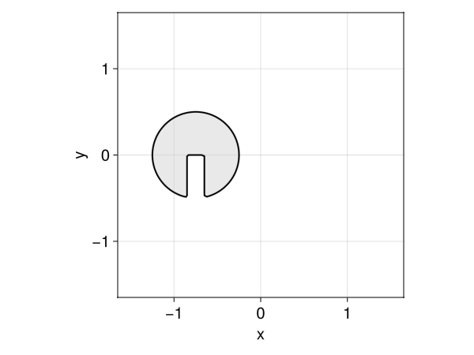

Zalesak disk
This example demonstrates the setup and simulation of a Zalesak disk, a standard benchmark in computational fluid dynamics, using the LevelSetMethods.jl.
Setting up the Grid and Disk
First, we create a Cartesian grid to represent the computational domain. We define a circular disk with a rectangular cut to form the Zalesak disk.
# Define the computational grid
grid = CartesianGrid((-1.5, -1.5), (1.5, 1.5), (100, 100))
# Define the center and radius of the circular disk
center = (-0.75, 0)
radius = 0.5
# Define the height and width of the rectangular notch
h = 1.0
w = 0.2
# Create the circular disk and rectangular notch
disk = LevelSetMethods.circle(grid; center, radius)
rec = LevelSetMethods.rectangle(grid; center = center .- (0, radius), width = (w, h))
# Use set difference to carve out the notch in the disk
ϕ = setdiff(disk, rec)
plot(ϕ)
Setting Up the Level Set Equation
We use the level set method to evolve the disk over time with a velocity field that simulates rotation:
# Define the advection equation with a rotational velocity field
eq = LevelSetEquation(;
levelset = ϕ,
terms = AdvectionTerm((x, t) -> (-x[2], x[1])),
bc = NeumannBC(),
)Level-set equation given by
ϕₜ + 𝐮 ⋅ ∇ ϕ = 0
Current time 0.0Evolving the Zalesak Disk
To evolve the Zalesak disk, we integrate the level set equation over time. We will visualize the evolution using GLMakie:
obs = Observable(eq)
fig = Figure()
ax = Axis(fig[1, 1])
plot!(ax, obs)
framerate = 30
t0 = current_time(eq)
tf = 2*π
timestamps = range(t0, tf; step = 1 / framerate)
record(fig, joinpath(@__DIR__, "zalesak2d.gif"), timestamps) do t_
integrate!(eq, t_)
return obs[] = eq
end"/home/runner/work/LevelSetMethods.jl/LevelSetMethods.jl/docs/build/zalesak2d.gif"
We see some small smearing of the disk due to numerical diffusion; this is a common issue, and the situation would be much worse with a low-order upwind scheme.
Three-dimensional Zalesak Disk
The same example can be run in 3D, but the solution takes longer to compute and visualize.
# 3D Zalesak's sphere example
grid = CartesianGrid((-1, -1, -1), (1, 1, 1), (50, 50, 50))
center = (-1 / 3, 0, 0)
radius = 0.5
disk = LevelSetMethods.sphere(grid; center, radius)
rec = LevelSetMethods.rectangle(
grid;
center = center .+ (0, radius, 0),
width = (1 / 3, 1.0, 2),
)
ϕ = setdiff(disk, rec)
eq = LevelSetEquation(;
levelset = ϕ,
terms = AdvectionTerm((x, t) -> π * SVector(x[2], -x[1], 0)),
bc = NeumannBC(),
)
LevelSetMethods.set_makie_theme!()
eq.t = 0
obs = Observable(eq)
fig = Figure()
ax = Axis3(fig[1, 1])
plot!(ax, obs)
framerate = 30
tf = 2
timestamps = range(0, tf, tf * framerate)
record(fig, joinpath(@__DIR__, "zalesak3d.gif"), timestamps) do t_
integrate!(eq, t_)
return obs[] = eq
end